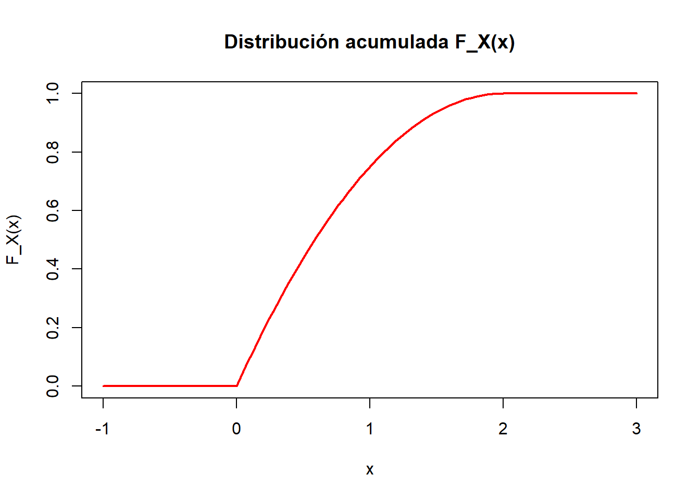

2 Variables aleatorias y Distribuciones de probabilidad
2.1 Ejercicio 2.1
Se sabe que la presencia de algunas mutaciones en una región genómica puede influir en la sobreexpresión (“Up”) o la inhibición (“Down”) de dos genes distintos. Se conocen 6 variantes de dicha mutación y, dado que los efectos de la sobreexpresión de los dos genes son muy similares se ha optado por contar únicamente cuántos genes se sobre-expresan en presencia de cada una de ellas (un individuo puede presentar una única variante). Un estudio realizado sobre 300 pacientes ha permitido estimar las siguientes probabilidades de aparición de cada mutación así como el número de genes sobre-expresados asociados a las mismas. Los resultados se encuentran disponibles en la tabla siguiente:
| Mutación | Probabilidad | \(N^{\circ}\) de genes |
|---|---|---|
| \(e_{1}\) | 0.15 | 0 |
| \(e_{2}\) | 0.13 | 1 |
| \(e_{3}\) | 0.07 | 1 |
| \(e_{4}\) | 0.30 | 2 |
| \(e_{5}\) | 0.20 | 2 |
| \(e_{6}\) | 0.15 | 0 |
Consideremos la variable aleatoria: \(X=\) “Número de genes sobre expresados”
Obtener su distribución de probabilidad y representarla gráficamente
Calcular la esperanza y la varianza de dicha variable
SOLUCIÓN
La variable aleatoria que nos interesa es \(X=\) “Número de genes sobre-expresados”.
2.1.1 Distribución de probabilidad
Para obtener la distribución de probabilidad de \(X\), necesitamos sumar las probabilidades de las mutaciones que tienen el mismo número de genes sobre-expresados.
Los posibles valores de \(X\) son 0, 1 y 2. A continuación calculamos la probabilidad de cada uno:
- Para \(X = 0\), las mutaciones son \(e_1\) y \(e_6\):
\[ P(X = 0) = P(e_1) + P(e_6) = 0.15 + 0.15 = 0.30 \]
- Para \(X = 1\), las mutaciones son \(e_2\) y \(e_3\):
\[ P(X = 1) = P(e_2) + P(e_3) = 0.13 + 0.07 = 0.20 \]
- Para \(X = 2\), las mutaciones son \(e_4\) y \(e_5\):
\[ P(X = 2) = P(e_4) + P(e_5) = 0.30 + 0.20 = 0.50 \]
La distribución de probabilidad de \(X\) es la siguiente:
\[ P(X = x) = \begin{cases} 0.30 & \text{si } x = 0, \\ 0.20 & \text{si } x = 1, \\ 0.50 & \text{si } x = 2. \end{cases} \]
Podemos representarla gráficamente usando R:
2.1.2 Esperanza y varianza
La esperanza (o valor esperado) de una variable aleatoria discreta \(X\) se calcula como:
\[ E(X) = \sum_{x} x \cdot P(X = x) \]
Sustituyendo los valores:
\[ E(X) = 0 \cdot 0.30 + 1 \cdot 0.20 + 2 \cdot 0.50 = 0 + 0.20 + 1.00 = 1.20 \]
La varianza de \(X\) se calcula como:
\[ \text{Var}(X) = E(X^2) - [E(X)]^2 \]
Primero calculamos \(E(X^2)\):
\[ E(X^2) = \sum_{x} x^2 \cdot P(X = x) \]
\[ E(X^2) = 0^2 \cdot 0.30 + 1^2 \cdot 0.20 + 2^2 \cdot 0.50 = 0 + 0.20 + 2.00 = 2.20 \]
Entonces, la varianza es:
\[ \text{Var}(X) = 2.20 - (1.20)^2 = 2.20 - 1.44 = 0.76 \]
Verificamos los cálculos con R:
# Calcular esperanza y varianza
esperanza <- sum(X_values * probabilities)
esperanza_cuadrado <- sum(X_values^2 * probabilities)
varianza <- esperanza_cuadrado - esperanza^2
esperanza## [1] 1.2## [1] 0.762.2 Ejercicio 2.2
Para describir el número de mutaciones presentes en un volumen estándar de un tumor unos investigadores han propuesto el modelo siguiente
\[ p(x)=\frac{K}{2+x}, x=0,1,2,3,4,5 \]
- Determinar qué valor debe de tener \(K\) para que \(p(x)\) sea una función de masa de probabilidad
- Calcular su esperanza y su varianza
- Calcular las probabilidades de los sucesos:
- 1 Un tumor presenta exactamente tres mutaciones
- 2 Un tumor presenta al menos una mutación
- 3 Un tumor presenta como máximo dos mutaciones.
SOLUCIÓN
Se considera el modelo para la distribución de probabilidades de mutaciones en un tumor dado por:
\[ p(x)=\frac{K}{2+x}, x=0,1,2,3,4,5 \]
2.2.1 Valor de \(K\)
Para que \(p(x)\) sea una función de masa de probabilidad, la suma de todas las probabilidades debe ser igual a 1. Es decir:
\[ \sum_{x=0}^{5} p(x) = 1 \]
Sustituyendo la fórmula de \(p(x)\):
\[ \sum_{x=0}^{5} \frac{K}{2+x} = 1 \]
Simplificamos la suma:
\[ K \sum_{x=0}^{5} \frac{1}{2+x} = 1 \]
La suma es:
\[ \sum_{x=0}^{5} \frac{1}{2+x} = \frac{1}{2} + \frac{1}{3} + \frac{1}{4} + \frac{1}{5} + \frac{1}{6} + \frac{1}{7} \]
Podemos calcular esta suma numéricamente en R:
## [1] 0.62780272.2.2 Esperanza y la varianza
La esperanza de \(X\) se calcula como:
\[ E(X) = \sum_{x=0}^{5} x \cdot p(x) = \sum_{x=0}^{5} x \cdot \frac{K}{2+x} \]
La varianza se calcula usando:
\[ \text{Var}(X) = E(X^2) - [E(X)]^2 \]
Para esto, primero calculamos \(E(X^2)\):
\[ E(X^2) = \sum_{x=0}^{5} x^2 \cdot p(x) = \sum_{x=0}^{5} x^2 \cdot \frac{K}{2+x} \]
Podemos calcular la esperanza y la varianza en R de la siguiente forma:
# Calcular la esperanza
esperanza <- sum((0:5) * K / (2 + 0:5))
# Calcular la esperanza al cuadrado
esperanza_cuadrado <- sum((0:5)^2 * K / (2 + 0:5))
# Calcular la varianza
varianza <- esperanza_cuadrado - esperanza^2
esperanza## [1] 1.766816## [1] 2.7617692.2.3 Probabilidades
Probabilidad de que un tumor presente exactamente tres mutaciones
La probabilidad de que \(X = 3\) es:
\[ P(X = 3) = p(3) = \frac{K}{2+3} \]
Podemos calcularlo en R:
## [1] 0.1255605Probabilidad de que un tumor presente al menos una mutación
La probabilidad de que \(X \geq 1\) es:
\[ P(X \geq 1) = 1 - P(X = 0) \]
Podemos calcularlo en R:
## [1] 0.6860987Probabilidad de que un tumor presente como máximo dos mutaciones
La probabilidad de que \(X \leq 2\) es:
\[ P(X \leq 2) = P(X = 0) + P(X = 1) + P(X = 2) \]
Podemos calcularlo en R:
## [1] 0.68011962.3 Ejercicio 2.3
Un modelo simplificado del tiempo de supervivencia, en años, tras un diagnóstico de una variante de leucemia es el siguiente:
\[ f_{x}(x)=-0.5 \cdot x+1, \quad \text { donde } \quad 0 \leq x \leq 2 \]
Comprobar que \(f_{X}\) es una densidad. Representarla gráficamente.
Calcular \(\mathrm{F}_{\mathrm{X}} \mathrm{y}\) representarla gráficamente.
Calcular \(P(X \geq 1), P(X>1), P(X=1), f_{x}(1)\).
Calcular la probabilidad de que un individuo diagnosticado con leucemia sobreviva :
- menos de seis meses, (ii) entre seis meses y un año, (iii) más de dos años.
Calcular \(E(X)\) i \(\operatorname{Var}(X)\).
En vista que el modelo anterior no ha resultado satisfactorio una bioestadística ha propuesto un modelo alternativo consistente en modelizar la variable como:
\[ g_{X}(x)=\exp (-k x), \text { dondex } \geq 0 \]
Calcular la constante \(k\) para que \(\mathrm{g}_{\mathrm{x}}\) sea una función de densidad de probabilidad. Repetir los cálculos de los apartados b), c), d) y e) con el nuevo modelo. Discutir adecuación de ambos modelos a una situación real.
SOLUCIÓN
2.3.1 \(f_X(x)\) es una densidad
Para comprobar que \(f_X(x)\) es una función de densidad, necesitamos verificar que cumple las dos condiciones básicas:
- \(f_X(x) \geq 0\) para todo \(x\) en su dominio.
- La integral de \(f_X(x)\) sobre todo su dominio debe ser 1, es decir:
\[ \int_0^2 f_X(x) \, dx = 1 \]
La función de densidad dada es \(f_X(x) = -0.5 \cdot x + 1\) con \(0 \leq x \leq 2\).
Primero, comprobamos que \(f_X(x) \geq 0\) para \(x \in [0, 2]\). Evaluamos los valores extremos:
- \(f_X(0) = -0.5 \cdot 0 + 1 = 1\)
- \(f_X(2) = -0.5 \cdot 2 + 1 = 0\)
La función es no negativa en el intervalo dado.
Ahora, calculamos la integral:
\[ \int_0^2 (-0.5 \cdot x + 1) \, dx = \left[ -0.25 \cdot x^2 + x \right]_0^2 = (-0.25 \cdot 4 + 2) - (0) = 1 \]
Por lo tanto, \(f_X(x)\) cumple con ambas condiciones y es una función de densidad.
2.3.3 Función de distribución
Calcular \(F_X(x)\) y representarla gráficamente
La función de distribución acumulada (CDF) \(F_X(x)\) se obtiene integrando la función de densidad:
\[ F_X(x) = \int_0^x (-0.5 \cdot t + 1) \, dt \]
Para \(x \in [0, 2]\), tenemos:
\[ F_X(x) = \left[-0.25 \cdot t^2 + t\right]_0^x = -0.25 \cdot x^2 + x \]
Para \(x < 0\), \(F_X(x) = 0\), y para \(x > 2\), \(F_X(x) = 1\).
Gráfica de \(F_X(x)\)ç
# R code to plot the CDF function
F_x <- function(x) ifelse(x < 0, 0, ifelse(x > 2, 1, -0.25 * x^2 + x))
curve(F_x, from = -1, to = 3, col = "red", lwd = 2, ylab = "F_X(x)", xlab = "x",
main = "Distribución acumulada F_X(x)")
2.3.4 Probabilidades y \(f_X(1)\)
- \(P(X \geq 1) = 1 - F_X(1)\):
\[ F_X(1) = -0.25 \cdot 1^2 + 1 = 0.75 \] Por lo tanto, \(P(X \geq 1) = 1 - 0.75 = 0.25\).
\(P(X > 1)\): Como \(X\) es una variable continua, \(P(X > 1) = P(X \geq 1) = 0.25\).
\(P(X = 1)\): Para una variable continua, la probabilidad puntual es 0, es decir, \(P(X = 1) = 0\).
\(f_X(1)\):
\[ f_X(1) = -0.5 \cdot 1 + 1 = 0.5 \]
2.3.5 Probabilidad de supervivencia
- Menos de seis meses (\(x = 0.5\)):
\[ P(X < 0.5) = F_X(0.5) = -0.25 \cdot 0.5^2 + 0.5 = 0.4375 \]
- Entre seis meses y un año (\(x \in [0.5, 1]\)):
\[ P(0.5 \leq X \leq 1) = F_X(1) - F_X(0.5) = 0.75 - 0.375 = 0.375 \]
- Más de dos años (\(x > 2\)): Como el dominio de \(X\) es \([0, 2]\), \(P(X > 2) = 0\).
2.3.6 \(E(X)\) y \(\operatorname{Var}(X)\)
- La esperanza de \(X\) es:
\[ E(X) = \int_0^2 x \cdot f_X(x) \, dx = \int_0^2 x \cdot (-0.5 \cdot x + 1) \, dx \]
Desarrollamos:
\[ E(X) = \int_0^2 (-0.5 \cdot x^2 + x) \, dx = \left[-\frac{0.5}{3} \cdot x^3 + 0.5 \cdot x^2\right]_0^2 \]
Calculamos:
\[ E(X) = -\frac{0.5}{3} \cdot 8 + 0.5 \cdot 4 = -\frac{4}{3} + 2 = \frac{2}{3} \]
- La varianza de \(X\) es:
\[ \operatorname{Var}(X) = E(X^2) - E(X)^2 \]
Primero calculamos \(E(X^2)\):
\[ E(X^2) = \int_0^2 x^2 \cdot f_X(x) \, dx = \int_0^2 x^2 \cdot (-0.5 \cdot x + 1) \, dx \]
Desarrollamos y calculamos:
\[ E(X^2) = \int_0^2 (-0.5 \cdot x^3 + x^2) \, dx = \left[-\frac{0.5}{4} \cdot x^4 + \frac{1}{3} \cdot x^3\right]_0^2 \]
\[ E(X^2) = -\frac{0.5}{4} \cdot 16 + \frac{1}{3} \cdot 8 = -2 + \frac{8}{3} = \frac{2}{3} \]
Finalmente:
\[ \operatorname{Var}(X) = E(X^2) - E(X)^2 = \frac{2}{3} - \left(\frac{2}{3}\right)^2 = \frac{2}{3} - \frac{4}{9} = \frac{2}{9} \]
2.3.7 Modelo alternativo \(g_X(x)\)
Dado el modelo alternativo \(g_X(x) = \exp(-k \cdot x)\) para \(x \geq 0\), la constante \(k\) se determina imponiendo que la integral de la función de densidad debe ser 1:
\[ \int_0^\infty \exp(-k \cdot x) \, dx = 1 \]
Resolviendo:
\[ \frac{1}{k} = 1 \implies k = 1 \]
Por lo tanto, el nuevo modelo de densidad es \(g_X(x) = \exp(-x)\).
2.4 Ejercicio 2.4
Para estudiar la regulación hormonal de una línea metabólica se inyectan ratas albinas con un fármaco que inhibe la síntesis de proteínas del organismo. En general, 4 de cada 20 ratas mueren a causa del fármaco antes de que el experimento haya concluido. Si se trata a 10 animales con el fármaco, ¿cuál es la probabilidad de que al menos 8 lleguen vivas al final del experimento?
SOLUCION
En este problema en el que tenemos grupos de 10 animales independientes, cada uno de los cuales puede sobrevivir o no resulta apropiada la distribución binomial.
La probabilidad de que una rata sobreviva al fármaco es \(p = \frac{16}{20} = 0.8\), dado que 4 de cada 20 ratas mueren.
El experimento se realiza con 10 ratas, por lo que tenemos \(n = 10\).
Queremos calcular la probabilidad de que al menos 8 ratas sobrevivan. Matemáticamente, esto corresponde a:
\[ P(X \geq 8) \]
donde \(X\) es el número de ratas que sobreviven y sigue una distribución binomial:
\[ X \sim \text{Binomial}(n=10, p=0.8) \]
2.4.1 Cálculo de la probabilidad
La probabilidad de que exactamente \(k\) ratas sobrevivan está dada por la fórmula de la binomial:
\[ P(X = k) = \binom{n}{k} p^k (1 - p)^{n-k} \]
Para responder la pregunta debemos calcular:
\[ P(X \geq 8) = P(X = 8) + P(X = 9) + P(X = 10) \] Esto puede calcularse:
- directamente usando la función de probabilidad acumulada implementada en R
- indirectamente calculando las probabilidades individuales y sumándolas.
En todo caso debemos recordar que al tratarse de una variable discreta si queremos usar \(F_X(x)\) para calcular \(P(X\geq k)\) deberemos tener en cuenta que: \[ P(X\geq k) = 1-P(X\leq k-1) \] En primer lugar calculamos esta suma utilizando la función de masa de probabilidad:
# Parámetros del problema
n <- 10
p <- 0.8
# Probabilidades P(X = 8), P(X = 9) y P(X = 10)
prob_8 <- dbinom(8, size = n, prob = p)
prob_9 <- dbinom(9, size = n, prob = p)
prob_10 <- dbinom(10, size = n, prob = p)
# Probabilidad total P(X >= 8)
prob_total <- prob_8 + prob_9 + prob_10
prob_total## [1] 0.6777995Si usamos la funcion de distribución, pbinom
## [1] 0.6777995Naturalmente ambos resultados coinciden. Obsérvese que al ser \(p=0.8\) valores altos resultan bastante probables, con lo que la
2.5 Ejercicio 2.5
En una cierta población se ha observado un número medio anual de 12 muertes por cáncer de pulmón. Si el número de muertes causadas por la enfermedad sigue una distribución de Poisson, ¿cuál es la probabilidad de que durante el año en curso: 1. haya exactamente 10 muertes por cáncer de pulmón? 2. 15 o más personas mueran a causa de la enfermedad? 3. 10 o menos personas mueran a causa de la enfermedad?
El número de muertes por cáncer de pulmón sigue una distribución de Poisson, que se usa para modelar la ocurrencia de eventos discretos dentro de un intervalo de tiempo, donde el valor esperado es proporcional al tamaño del intervalo. En este caso, el valor esperado es el número medio de muertes por año, que es 12. La función de masa de probabilidad (PMF) de una variable aleatoria \(X\) con distribución de Poisson y parámetro \(\lambda\) es:
\[ P(X = k) = \frac{\lambda^k e^{-\lambda}}{k!} \]
donde \(k\) es el número de eventos, \(\lambda\) es el valor esperado (12 en nuestro caso) y \(k!\) es el factorial de \(k\). Usaremos este modelo para resolver los apartados.
2.5.1 Probabilidad de que haya exactamente 10 muertes
La probabilidad de observar exactamente \(k = 10\) muertes se puede calcular usando la PMF de la distribución de Poisson con \(\lambda = 12\):
\[ P(X = 10) = \frac{12^{10} e^{-12}}{10!} \]
Podemos calcular este valor con R.
## [1] 0.10483732.5.2 Probabilidad de que 15 o más personas mueran
Para obtener la probabilidad de que 15 o más personas mueran, necesitamos calcular la probabilidad acumulada de \(X \geq 15\). Esto se puede obtener restando de 1 la probabilidad acumulada de \(X < 15\), es decir:
\[ P(X \geq 15) = 1 - P(X < 15) = 1 - P(X \leq 14) \]
Usamos la función de probabilidad acumulada (CDF) de la Poisson en R.
## [1] 0.22797552.6 Ejercicio 2.6
Los daños a los cromosomas del óvulo o del espermatozoide, pueden causar mutaciones que conducen a abortos, defectos de nacimiento, u otras deficiencias genéticas. Un estudio sobre los efectos teratogénicos de la radiación ha determinado que la probabilidad de que tal mutación se produzca por radiación es del 10%. El resto son atribuibles a otras causas. Una vez detectadas 150 mutaciones,
- ¿cuántas se esperaría que se debiesen a radiaciones?
- ¿Cuál es la probabilidad de que solamente 10 se debiesen a radiaciones?
Solución
Para analizar el número de mutaciones que se deben a radiaciones, podemos considera dos modelos diferentes: uno basado en la distribución binomial y otro en la distribución de Poisson.
2.6.1 Justificación del uso de distribución binomial
La distribución binomial es adecuada cuando tenemos un número fijo de ensayos independientes y cada ensayo tiene dos posibles resultados: éxito (la mutación es debida a radiación) o fracaso (la mutación no es debida a radiación). En cada ensayo, la probabilidad de éxito es constante.
Esto se ajusta perfectamente a las condiciones del problema: - Hay 150 ensayos independientes (cada mutación observada puede estar o no causada por radiación). - Cada ensayo tiene dos posibles resultados: mutación por radiación o mutación por otra causa. - La probabilidad de éxito es constante y pequeña (\(p = 0.1\)). Por tanto, el número de mutaciones debidas a radiación se puede modelizar bien mediante una distribución binomial \(X \sim \text{Binomial}(n = 150, p = 0.1)\).
2.6.2 Justificación del uso de distribución de Poisson
La distribución de Poisson es adecuada para modelar el número de eventos raros que ocurren en un intervalo de tiempo, espacio, o cualquier otra unidad, cuando estos eventos ocurren de forma independiente y su probabilidad de ocurrencia es baja.
En este caso las “mutaciones debidas a radiación” pueden considerarse eventos raros dentro de un gran conjunto de mutaciones (150 mutaciones observadas, pero solo un 10% de ellas son debidas a radiación).
Puede considerarse además, que las mutaciones individuales pueden ocurrir de forma independiente entre sí, ya que la probabilidad de que una mutación se deba a radiación no afecta a la probabilidad de que otra mutación sea causada por radiación.
Estas condiciones son características de los procesos de Poisson y por tanto la distribución de Poisson es una elección natural para describir procesos en los que los eventos ocurren de manera aleatoria en un intervalo dado (por ejemplo, en un periodo de tiempo o un espacio), siempre que:
- Los eventos ocurran con una tasa promedio constante (en este caso, la tasa de mutaciones debidas a radiaciones es proporcional a la tasa global de mutaciones, multiplicada por la probabilidad \(p = 0.1\)).
- No haya límite teórico en el número de eventos que puedan ocurrir en un intervalo (aunque observamos un total de 150 mutaciones, teóricamente podríamos seguir detectando más mutaciones).
En el modelo de Poisson, el parámetro \(\lambda\) representa la tasa promedio de ocurrencia de los eventos (en este caso, mutaciones debidas a radiación). Si conocemos la tasa promedio de aparición de mutaciones por radiación (\(\lambda = n \cdot p\) en el contexto binomial, pero también se puede calcular directamente si conocemos la tasa de aparición de eventos raros), entonces podemos usar directamente la distribución de Poisson para modelar el número de eventos.
En este caso, \(\lambda = 150 \cdot 0.1 = 15\), que representa el número esperado de mutaciones debidas a radiación en el total observado de mutaciones.
2.6.3 Aproximación del modelo binomial por el de Poisson
La distribución de Poisson puede considerarse una aproximación de la binomial cuando el número de ensayos (\(n\)) es grande y la probabilidad de éxito (\(p\)) es pequeña. En este caso, el número esperado de éxitos, \(n \cdot p\), se mantiene moderado (en este caso, \(n \cdot p = 15\)).
Este resultado que se conoce como límite de Poisson establece que si:
- \(n\) es grande (muchos ensayos),
- \(p\) es pequeño (baja probabilidad de éxito),
- el producto \(n \cdot p = \lambda\) es moderado,
entonces la binomial \(X \sim \text{Binomial}(n, p)\) se puede aproximar por una distribución de Poisson con parámetro \(\lambda = n \cdot p\).
En este caso:
- \(n = 150\) es suficientemente grande.
- \(p = 0.1\) es pequeño.
- \(n \cdot p = 15\), lo cual es un valor razonable para usar la aproximación de Poisson.
Por tanto, el número de mutaciones debidas a radiaciones puede aproximarse por una distribución de Poisson \(X \sim \text{Poisson}(\lambda = 15)\).
2.6.4 Número esperado de mutaciones
En ambos modelos, la esperanza del número de mutaciones debidas a radiaciones es \(E[X] = n \cdot p\). Esto representa el número promedio de mutaciones debidas a radiaciones. Lo calculamos:
\[ E[X] = 150 \cdot 0.1 = 15 \]
Por lo tanto, se espera que alrededor de 15 mutaciones se deban a radiaciones.
2.6.5 Probabilidad de que exactamente 10 mutaciones se deban a radiaciones
2.6.5.1 Usando la distribución Binomial
La probabilidad de que exactamente 10 mutaciones se deban a radiaciones se puede calcular usando la PMF de la binomial:
\[ P(X = 10) = \binom{150}{10} (0.1)^{10} (0.9)^{140} \]
Usando R tenemos:
## [1] 0.045916812.6.6 Conclusión
Se espera que 15 de las 150 mutaciones se deban a radiaciones.
La probabilidad de que exactamente 10 mutaciones se deban a radiaciones es:
- Usando la distribución binomial:
## [1] 0.04591681- Usando la aproximación de Poisson:
## [1] 0.04861075
Ambos métodos dan resultados similares, pero el modelo de Poisson es útil para simplificar los cálculos cuando el número total de mutaciones es grande y la probabilidad de cada evento es pequeña.
2.7 Ejercicio 2.7
Entre los diabéticos, el nivel de glucosa en sangre \(X\), en ayunas, puede suponerse de distribución aproximadamente normal, con media \(106 \mathrm{mg} / 100 \mathrm{ml}\) y desviación típica \(8 \mathrm{mg} / 100 \mathrm{ml}\), es decir : \(X \sim N\left(\mu=106, \sigma^{2}=64\right)\).
Hallar; 1. El porcentaje de diabéticos con niveles de glucosa inferiores a 120 ( \(P[X \leq 120]\) 2. ¿Qué porcentaje de diabéticos tienen niveles comprendidos entre 90 y 120? 3. Hallar el nivel de glucosa “p25”, caracterizado por la propiedad de que el \(25 \%\) de todos los diabéticos tiene un nivel de glucosa en ayunas inferior o igual a \(x\).
SOLUCIÓN
Según el enunciado el nivel de glucosa \(X\) se distribuye según una distribución normal con media \(\mu = 106\) y varianza \(\sigma^2 = 64\), es decir, \(X \sim N(106, 64)\), o equivalentemente \(X \sim N(106, 8^2)\).
2.7.1 Porcentaje de diabéticos con niveles de glucosa inferiores a 120 (\(P[X \leq 120]\))
Para calcular esta probabilidad, necesitamos estandarizar la variable \(X\) a una normal estándar \(Z \sim N(0, 1)\). La fórmula de estandarización es:
\[ Z = \frac{X - \mu}{\sigma} \]
Sustituyendo los valores de \(\mu = 106\) y \(\sigma = 8\):
\[ Z = \frac{120 - 106}{8} = 1.75 \]
Ahora calculamos \(P(Z \leq 1.75)\), es decir, la probabilidad de que la variable estándar normal sea menor o igual que 1.75. Esta probabilidad la obtenemos a partir de la tabla de la normal estándar o usando R.
## [1] 0.95994082.7.2 Porcentaje de diabéticos con niveles de glucosa comprendidos entre 90 y 120
En este caso queremos calcular \(P(90 \leq X \leq 120)\). Para hacerlo, calculamos las probabilidades individuales de \(P(X \leq 120)\) y \(P(X \leq 90)\), y restamos la segunda de la primera:
\[ P(90 \leq X \leq 120) = P(X \leq 120) - P(X \leq 90) \]
Primero estandarizamos ambas variables:
\[ Z_{120} = \frac{120 - 106}{8} = 1.75 \] \[ Z_{90} = \frac{90 - 106}{8} = -2.00 \]
Ahora calculamos \(P(Z \leq 1.75)\) y \(P(Z \leq -2.00)\) usando R.
# Calculamos ambas probabilidades
p2_120 <- pnorm(1.75)
p2_90 <- pnorm(-2.00)
p2 <- p2_120 - p2_90
p2## [1] 0.93719072.7.3 Hallar el nivel de glucosa “p25”
Para encontrar el percentil 25 de la distribución, necesitamos resolver la ecuación:
\[ P(X \leq p_{25}) = 0.25 \]
Sabemos que \(X \sim N(106, 64)\), así que estandarizamos el valor \(p_{25}\):
\[ Z_{p25} = \frac{p_{25} - 106}{8} \]
Luego, encontramos el valor de \(Z_{p25}\) que corresponde al percentil 25 de la distribución normal estándar, es decir, \(P(Z \leq Z_{p25}) = 0.25\). Esto lo obtenemos con la función inversa de la distribución normal estándar.
# Calculamos el valor z correspondiente al percentil 25
z_p25 <- qnorm(0.25)
# Calculamos el p25 en la escala original
p25 <- 106 + z_p25 * 8
p25## [1] 100.60412.7.4 Resumen de resultados:
- La probabilidad de que el nivel de glucosa sea menor o igual a 120 es aproximadamente:
\[ P[X \leq 120] = 0.9599 \]
- El porcentaje de diabéticos con niveles de glucosa comprendidos entre 90 y 120 es aproximadamente:
\[ P[90 \leq X \leq 120] = 0.9104 \]
- El nivel de glucosa correspondiente al percentil 25, es decir, el valor \(p_{25}\), es aproximadamente:
\[ p_{25} \approx 100.61 \, \mathrm{mg/100ml} \]
2.8 Ejercicio 28
Se supone que la glucemia basal en individuos sanos, \(X_{s}\) sigue una distribución \(X \sim N(\mu=80, \sigma=10)\), mientras que en los diabéticos \(X_{d}\), sigue una distribución \(X \sim N(\mu=160, \sigma=31.4)\). Si se conviene en clasificar como sanos al \(2 \%\) de los diabéticos: a) ¿Por debajo de qué valor se considera sano a un individuo? ¿Cuántos sanos serán clasificados como diabéticos? b) Se sabe que en la población en general el \(10 \%\) de los individuos son diabéticos ¿cuál es la probabilidad de que un individuo elegido al azar y diagnosticado como diabético, realmente lo sea?
2.9 Ejercicio 2.9
Supóngase que se van a utilizar 20 ratas en un estudio de agentes coagulantes de la sangre. Como primera experiencia, se dio un anticoagulante a 10 de ellos, pero por inadvertencia se pusieron todas sin marcas en el mismo recinto. Se necesitaron 12 ratas para la segunda fase del estudio y se le tomó al azar sin reemplazamiento. ¿Cuál es la probabilidad de que de las 12 elegidas 6 tengan la droga y 6 no la tengan?